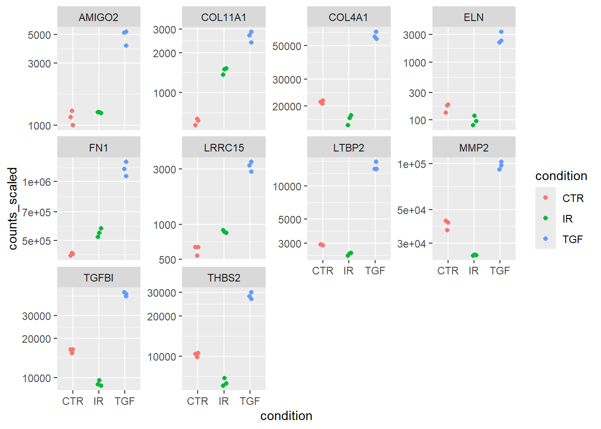

## Create two folders for the meta data and counts
dir.create("meta_data", showWarnings = FALSE)
dir.create("raw_counts",showWarnings = FALSE)
## Download the raw data files
download.file("https://raw.githubusercontent.com/markdunning/markdunning.github.com/refs/heads/master/files/training/bulk_rnaseq/meta_data/sampleInfo.csv", destfile = "meta_data/sampleInfo.csv")
download.file("https://raw.githubusercontent.com/markdunning/markdunning.github.com/refs/heads/master/files/training/bulk_rnaseq/raw_counts/raw_counts_matrix.tsv", destfile = "raw_counts/raw_counts_matrix.tsv")Teaching an old dog new tricks; tidy analysis of RNA-seq
Can I retrain myself to use tidy methods for bulk rna-seq analysis?
Pre-amble
I have been analysing RNA-seq data for rather longer than I care to mention, and have mostly stuck to the same tried and tested workflow. Whilst re-writing my tutorials for these pages it occurred to me that the materials, that mostly use base R, would benefit from some of the same tidy methodology I employ on a daily basis for general data manipulation and visualisation. Fortunately in recent years there has been a drive to introduce tidy frameworks for omics. Can this new framework replace my daily workhorse?

We’ll start by downloading some example data. This is the same example dataset used in my recent bulk RNA-seq tutorial.
The packages you will need can be installed via
if (!require(BiocManager)) install.packages("BiocManager")
if (!require(SummarizedExperiment)) BiocManager::install("SummarizedExperiment")
if (!require(tidybulk)) BiocManager::install("tidybulk")The data have to be read into R first. It consists of two files containing the counts and “metadata” about the samples. Both are in tab-delimited files so we can use the read.table function from base R. However, since the counts are required to be in a numeric matrix form with rownames being gene or feature identifiers we have to manipulate the input data accordingly. Specifically, we need to set the rownames to be the gene names and remove the first column from the input data.
meta <- read.csv("meta_data/sampleInfo.csv") |>
dplyr::mutate(condition = stringr::str_to_upper(condition))
raw <- read.delim("raw_counts/raw_counts_matrix.tsv")
counts <- raw[,-1]
rownames(counts) <- raw$ENSEMBL
colnames(counts) <- stringr::str_remove_all(colnames(counts), "X")The route into using the tidy framework seems to be via a SummarizedExperiment object rather than the DESeqDataset that I am used to. We will briefly examine this format.
library(SummarizedExperiment)
caf_data <- SummarizedExperiment(assays=list(counts=counts),
colData=meta,)
caf_dataclass: SummarizedExperiment
dim: 57914 9
metadata(0):
assays(1): counts
rownames(57914): ENSG00000000003 ENSG00000000005 ... ENSG00000284747
ENSG00000284748
rowData names(0):
colnames(9): 1_CTR_BC_2 2_TGF_BC_4 ... 8_TGF_BC_14 9_IR_BC_15
colData names(5): Run condition Name Replicate TreatedThe raw counts can be accessed using the assay function. Each entry is the number of counts assigned to a particular gene (row) in a given sample (column). The row and column names are the Ensembl gene identifier, and a sample name respectively.
## Use select and slice to print fewer items to the screen
## Feel free to remove these lines if you want to see the full output
library(dplyr)
assay(caf_data) %>%
select(1:4) %>%
slice(1:10) 1_CTR_BC_2 2_TGF_BC_4 3_IR_BC_5 4_CTR_BC_6
ENSG00000000003 1579 1547 1342 1704
ENSG00000000005 0 0 0 0
ENSG00000000419 1774 1775 1866 1809
ENSG00000000457 698 617 601 733
ENSG00000000460 246 309 116 224
ENSG00000000938 10 5 11 6
ENSG00000000971 6370 5238 5008 6486
ENSG00000001036 4009 3335 3855 4224
ENSG00000001084 1037 940 928 970
ENSG00000001167 1498 1622 1042 1406If we want to know more information about the biological samples we have to use the colData function
colData(caf_data) %>%
data.frame Run condition Name Replicate Treated
1_CTR_BC_2 1_CTR_BC_2 CTR CTR_1 1 N
2_TGF_BC_4 2_TGF_BC_4 TGF TGF_1 1 Y
3_IR_BC_5 3_IR_BC_5 IR IR_1 1 Y
4_CTR_BC_6 4_CTR_BC_6 CTR CTR_2 2 N
5_TGF_BC_7 5_TGF_BC_7 TGF TGF_2 2 Y
6_IR_BC_12 6_IR_BC_12 IR IR_2 2 Y
7_CTR_BC_13 7_CTR_BC_13 CTR CTR_3 3 N
8_TGF_BC_14 8_TGF_BC_14 TGF TGF_3 3 Y
9_IR_BC_15 9_IR_BC_15 IR IR_3 3 YThe data representation was adopted during the days of microarrays as a way to standardize and unify the storage and handling of complex genomic data. It is a perfectly natural for the counts for a particular gene to be found by looking across columns for a particular row, and indeed this is often how we interact with count data in spreadsheets. Furthermore, the linear model interface of limma and associated packages made use of this data structure. Since we didn’t have ggplot2 and friends at the time we were happy using base R’s boxplot and other functions.
However, the format is not immediately accessible to those familiar with a “tidyverse” mindset. I find this particularly jarring during my RNA-seq teaching which based upon the foundation of dplyr and ggplot2. It is somewhat disappointing to tell students that the code they learnt about in the introductory R classes cannot be applied to the new data type of RNA-seq without some serious data manipulation.
The problems arise because the data are “wide” and not “long”. Consider the code to visualise the distribution of each sample as a boxplot (which is a common QC task)
## Do not try to run this!
ggplot(data, aes(x = ..., y =...)) + geom_boxplot()From a “tidy” standpoint we require a a variable in our dataset that can be mapped to the x axis. In a boxplot this should be the sample name. Of course, we can get around this problem via the usage of pivot_longer from tidyr but this is a bit more work than I would like. I would rather concentrate on the data visualisation and interpretation
We might also like to subset our data according to particular sample groupings, or retrieve the data for a given gene and then plot. This is complicated by the counts and meta data being stored separately, meaning they have to be joined. Again, not impossible but does distract from the key learning objectives of learning about RNA-seq.
Introduction to tidybulk
The tidybulk package solves these issues, and also provides a way of performing other common analysis tasks. Once the tidybulk function is applied, the long nature of the data in this format is immediately apparent as we have a huge amount of rows. However, we have all the information we require in the table to permit queries using standard tidyverse operations.
library(tidybulk)
caf_tidy <- caf_data %>% tidybulk()## Not evaluated to print excessive printing to screen for the HTML notes.
caf_tidy %>%
slice_head(n = 10)# A tibble: 10 × 8
.feature .sample counts Run condition Name Replicate Treated
<chr> <chr> <int> <chr> <chr> <chr> <int> <chr>
1 ENSG00000000003 1_CTR_BC_2 1579 "1_CTR_B… CTR CTR_1 1 N
2 ENSG00000000005 1_CTR_BC_2 0 "1_CTR_B… CTR CTR_1 1 N
3 ENSG00000000419 1_CTR_BC_2 1774 "1_CTR_B… CTR CTR_1 1 N
4 ENSG00000000457 1_CTR_BC_2 698 "1_CTR_B… CTR CTR_1 1 N
5 ENSG00000000460 1_CTR_BC_2 246 "1_CTR_B… CTR CTR_1 1 N
6 ENSG00000000938 1_CTR_BC_2 10 "1_CTR_B… CTR CTR_1 1 N
7 ENSG00000000971 1_CTR_BC_2 6370 "1_CTR_B… CTR CTR_1 1 N
8 ENSG00000001036 1_CTR_BC_2 4009 "1_CTR_B… CTR CTR_1 1 N
9 ENSG00000001084 1_CTR_BC_2 1037 "1_CTR_B… CTR CTR_1 1 N
10 ENSG00000001167 1_CTR_BC_2 1498 "1_CTR_B… CTR CTR_1 1 N We can now remove the caf_data object to save memory
rm(caf_data)Say for example we want the counts for a particular gene, and which sample it is most highly-expressed in
caf_tidy %>%
filter(.feature == "ENSG00000000003") %>%
dplyr::select(counts,Run) %>%
arrange(desc(counts)) %>%
slice(1:10)# A tibble: 9 × 2
counts Run
<int> <chr>
1 1704 "4_CTR_BC_6"
2 1579 "1_CTR_BC_2 "
3 1556 "7_CTR_BC_13 "
4 1547 "2_TGF_BC_4"
5 1395 "5_TGF_BC_7"
6 1370 "8_TGF_BC_14"
7 1342 "3_IR_BC_5"
8 1269 "9_IR_BC_15"
9 1264 "6_IR_BC_12" Or calculate the average expression in different groups.
caf_tidy %>%
filter(.feature == "ENSG00000000003") %>%
group_by(condition) %>%
summarise(mean(counts))# A tibble: 3 × 2
condition `mean(counts)`
<chr> <dbl>
1 CTR 1613
2 IR 1292.
3 TGF 1437.A basic QC metric is to count the total number of reads for each sample. In a typical bulk RNA-seq study we should be getting 10s of millions of reads - although the total number will vary. Any samples with dramatically lower numbers could be cause for concern.
caf_tidy %>%
group_by(.sample) %>%
summarise(LibrarySize = sum(counts)) %>%
mutate(`Library Size - Millions of Reads` = LibrarySize / 1e6)# A tibble: 9 × 3
.sample LibrarySize `Library Size - Millions of Reads`
<chr> <int> <dbl>
1 1_CTR_BC_2 37966392 38.0
2 2_TGF_BC_4 42302453 42.3
3 3_IR_BC_5 33300002 33.3
4 4_CTR_BC_6 39401879 39.4
5 5_TGF_BC_7 37716366 37.7
6 6_IR_BC_12 32599748 32.6
7 7_CTR_BC_13 34273109 34.3
8 8_TGF_BC_14 38522174 38.5
9 9_IR_BC_15 36478190 36.5The resulting data can be visualised using a geom_col in ggplot2 for example.
library(ggplot2)
caf_tidy %>%
group_by(.sample) %>%
summarise(LibrarySize = sum(counts)) %>%
mutate(`Library Size - Millions of Reads` = LibrarySize / 1e6) %>%
ggplot(aes(x=.sample, y = `Library Size - Millions of Reads`)) + geom_col(fill="steelblue")
It looks very promising so far 🎉. The above were examples of using the standard tidyverse operations. The tidybulk package also has functions for implementing the steps in a standard RNA-seq workflow.
Dimensionality reduction
My next go-to method for RNA-seq is to use a PCA to visualise my data. Principal Component Analysis (PCA) and Multi-Dimensional Scaling (MDS) plots are among the most crucial visualizations for analyzing RNA-sequencing data as these techniques reduce the dimensionality of the data, allowing us to identify the primary sources of variation.
There is are a couple of recommended steps before running the PCA to filter out lowly-expressed genes and normalize for differences in sequencing depth (scale_abundance).
# 1. Scale/Normalize the counts
caf_tidy_scaled <- caf_tidy %>%
# Filter out lowly expressed genes (recommended best practice)
identify_abundant() %>%
keep_abundant(factor_of_interest = condition) %>%
# Normalize for sequencing depth (creates a 'count_scaled' column)
# Default method is TMM (recommended for bulk RNA-seq)
scale_abundance()The tidybulk package has several dimensionality reduction techniques available, so you can use whichever one you prefer. I’ll stick with PCA and base the analysis on the 500 most-variable genes - which is the default in the plotPCA function of DESeq2.
ntop_genes <- 500
pca_results <- caf_tidy_scaled %>%
reduce_dimensions(
method = "PCA",
.value = count_scaled,
top = ntop_genes,
transform = log1p
)
pca_results %>%
slice_head(n = 10)# A tibble: 10 × 14
.feature .sample counts Run condition Name Replicate Treated .abundant
<chr> <chr> <int> <chr> <chr> <chr> <int> <chr> <lgl>
1 ENSG0000000… 1_CTR_… 1579 "1_C… CTR CTR_1 1 N TRUE
2 ENSG0000000… 1_CTR_… 1774 "1_C… CTR CTR_1 1 N TRUE
3 ENSG0000000… 1_CTR_… 698 "1_C… CTR CTR_1 1 N TRUE
4 ENSG0000000… 1_CTR_… 246 "1_C… CTR CTR_1 1 N TRUE
5 ENSG0000000… 1_CTR_… 6370 "1_C… CTR CTR_1 1 N TRUE
6 ENSG0000000… 1_CTR_… 4009 "1_C… CTR CTR_1 1 N TRUE
7 ENSG0000000… 1_CTR_… 1037 "1_C… CTR CTR_1 1 N TRUE
8 ENSG0000000… 1_CTR_… 1498 "1_C… CTR CTR_1 1 N TRUE
9 ENSG0000000… 1_CTR_… 285 "1_C… CTR CTR_1 1 N TRUE
10 ENSG0000000… 1_CTR_… 3948 "1_C… CTR CTR_1 1 N TRUE
# ℹ 5 more variables: TMM <dbl>, multiplier <dbl>, counts_scaled <dbl>,
# PC1 <dbl>, PC2 <dbl>If you print the pca_results object to screen you will notice that it is still in “long”/“tidy” format, which on this occasion is not particularly useful for visualisation as many of the variables we need for plotting are repeated many times. To provide a simple summary of PC values for each sample we can use the pivot_sample function. Because we are already using the tidy format, the biological and experimental groups we might want to include on the plot are already available to us.
pca_results %>% pivot_sample() %>%
dplyr::select(.sample,condition,contains("PC"))# A tibble: 9 × 4
.sample condition PC1 PC2
<chr> <chr> <dbl> <dbl>
1 1_CTR_BC_2 CTR -6.07 11.1
2 2_TGF_BC_4 TGF -20.6 -8.72
3 3_IR_BC_5 IR 23.8 -3.27
4 4_CTR_BC_6 CTR -5.40 10.6
5 5_TGF_BC_7 TGF -18.9 -7.34
6 6_IR_BC_12 IR 21.3 -3.21
7 7_CTR_BC_13 CTR -1.78 12.8
8 8_TGF_BC_14 TGF -16.7 -6.44
9 9_IR_BC_15 IR 24.4 -5.46A basic PCA visualisation will show the values of PC1 and PC2 using a scatter plot with ggplot2. The results are pretty similar indeed to the DESeq2 equivalent workflow
pca_results %>%
pivot_sample() %>%
ggplot(aes(x=PC1, y=PC2, col = condition)) +
geom_point() 
Gene Annotations
At the moment we don’t have particularly meaningful gene names that we can use. We have an Ensembl ID, and have ways to convert between. One of which is using an organism-specific package in Bioconductor. First, we get all the IDs we have.
ens_ids <- pull(caf_tidy, .feature) %>% uniqueThe overall strategy is to use org.Hs.eg.db to convert between one type of ID (ENSEMBL in our case) to another. We can try the official gene symbol and gene name. For non-human data, equivalent packages are available. e.g. org.Mm.eg.db for mouse.
library(org.Hs.eg.db)
anno <- AnnotationDbi::select(org.Hs.eg.db,
keys = ens_ids,
columns = c("SYMBOL","GENENAME"),
keytype = "ENSEMBL")
anno %>% slice(1:10) ENSEMBL SYMBOL
1 ENSG00000000003 TSPAN6
2 ENSG00000000005 TNMD
3 ENSG00000000419 DPM1
4 ENSG00000000457 SCYL3
5 ENSG00000000460 FIRRM
6 ENSG00000000938 FGR
7 ENSG00000000971 CFH
8 ENSG00000001036 FUCA2
9 ENSG00000001084 GCLC
10 ENSG00000001167 NFYA
GENENAME
1 tetraspanin 6
2 tenomodulin
3 dolichyl-phosphate mannosyltransferase subunit 1, catalytic
4 SCY1 like pseudokinase 3
5 FIGNL1 interacting regulator of recombination and mitosis
6 FGR proto-oncogene, Src family tyrosine kinase
7 complement factor H
8 alpha-L-fucosidase 2
9 glutamate-cysteine ligase catalytic subunit
10 nuclear transcription factor Y subunit alphaTesting for differential expression
The tidybulk package has simplified workflows to test for differential expression between different conditions. The workflow is not completely automated however because we still need to specify what sample groups to compare and which contrasts to make. This is achieved via the .formula argument. The .contrasts argument also allows us to explicitly define the direction of the contrast and which group to use as a baseline; which will affect the sign of the fold-change.
Note that I am using the caf_tidy object here rather than the scaled version as DESeq2 will do it’s own normalization as part of the workflow.
counts_de <- caf_tidy %>%
test_differential_abundance(
.formula = ~ condition,
method = "deseq2",
.contrasts = list(c("condition", "TGF","CTR")),
## As we're only doing one contrast, this will make the column names cleaner
omit_contrast_in_colnames = TRUE
)Warning: The `.contrasts` argument of `test_differential_abundance()` is deprecated as
of tidybulk 1.7.4.
ℹ The argument .contrasts is now deprecated please use contrasts (without the
dot).=====================================
tidybulk says: All testing methods use raw counts, irrespective of if scale_abundance
or adjust_abundance have been calculated. Therefore, it is essential to add covariates
such as batch effects (if applicable) in the formula.
=====================================
This message is displayed once per session.Warning in eval(dots[[i]][[action]], env, env): tidybulk says: highly abundant
transcripts were not identified (i.e. identify_abundant()) or filtered (i.e.,
keep_abundant), therefore this operation will be performed on unfiltered data.
In rare occasions this could be wanted. In standard whole-transcriptome
workflows is generally unwanted.estimating size factors
estimating dispersions
gene-wise dispersion estimates
mean-dispersion relationship
final dispersion estimates
fitting model and testing
tidybulk says: to access the raw results (fitted GLM) do `attr(..., "internals")$DESeq2`Running the code gives me the same messages printed to screen as if I was running the DESeq function (which it is clearly doing under the hood). There is also a warning about not filtering highly abundant transcripts. I didn’t think that removing such transcripts was required for DESeq2, but perhaps I will have to read up on that.
counts_de %>%
slice_head(n = 10)# A tibble: 10 × 14
.feature .sample counts Run condition Name Replicate Treated baseMean
<chr> <chr> <int> <chr> <chr> <chr> <int> <chr> <dbl>
1 ENSG00000000… 1_CTR_… 1579 "1_C… CTR CTR_1 1 N 1431.
2 ENSG00000000… 1_CTR_… 0 "1_C… CTR CTR_1 1 N 0.114
3 ENSG00000000… 1_CTR_… 1774 "1_C… CTR CTR_1 1 N 1791.
4 ENSG00000000… 1_CTR_… 698 "1_C… CTR CTR_1 1 N 641.
5 ENSG00000000… 1_CTR_… 246 "1_C… CTR CTR_1 1 N 206.
6 ENSG00000000… 1_CTR_… 10 "1_C… CTR CTR_1 1 N 7.41
7 ENSG00000000… 1_CTR_… 6370 "1_C… CTR CTR_1 1 N 5318.
8 ENSG00000001… 1_CTR_… 4009 "1_C… CTR CTR_1 1 N 3630.
9 ENSG00000001… 1_CTR_… 1037 "1_C… CTR CTR_1 1 N 923.
10 ENSG00000001… 1_CTR_… 1498 "1_C… CTR CTR_1 1 N 1261.
# ℹ 5 more variables: log2FoldChange <dbl>, lfcSE <dbl>, stat <dbl>,
# pvalue <dbl>, padj <dbl>The results are still in a long format table. Again, this is actually not very helpful and would prefer to have a single row for each gene tested. The function pivot_transcript performs the reshaping. We can now add the gene annotation we created earlier, but retain the original Ensembl IDs so we can retrieve count information. The final arrange line orders by significance.
results_table <- counts_de %>%
pivot_transcript() %>%
left_join(anno, by=c(".feature"="ENSEMBL")) %>%
arrange(padj)
results_table %>% slice_head(n = 10)# A tibble: 10 × 9
.feature baseMean log2FoldChange lfcSE stat pvalue padj SYMBOL
<chr> <dbl> <dbl> <dbl> <dbl> <dbl> <dbl> <chr>
1 ENSG00000119… 6472. 2.37 0.0708 33.5 2.44e-246 4.37e-242 LTBP2
2 ENSG00000120… 22002. 1.44 0.0590 24.3 9.25e-131 8.29e-127 TGFBI
3 ENSG00000172… 1482. 2.38 0.0984 24.2 1.11e-129 6.61e-126 LRRC15
4 ENSG00000049… 932. 4.00 0.176 22.8 7.23e-115 3.24e-111 ELN
5 ENSG00000060… 1512. 2.12 0.0953 22.3 6.45e-110 2.31e-106 COL11…
6 ENSG00000115… 683349. 1.45 0.0687 21.2 2.18e- 99 6.52e- 96 FN1
7 ENSG00000187… 30609. 1.46 0.0693 21.1 1.78e- 98 4.55e- 95 COL4A1
8 ENSG00000186… 14380. 1.47 0.0700 21.0 9.71e- 98 2.18e- 94 THBS2
9 ENSG00000087… 51862. 1.28 0.0661 19.4 9.03e- 84 1.80e- 80 MMP2
10 ENSG00000139… 2302. 2.07 0.109 19.0 2.02e- 80 3.62e- 77 AMIGO2
# ℹ 1 more variable: GENENAME <chr>We can write the results to a spreadsheet for further investigation.
write.csv(results_table, "DESeq2_TGF_vs_CTR.csv",quote=FALSE,row.names = FALSE)
## Could remove counts_de if no longer needed
## rm(counts_de)A volcano plot is a common visualisation that shows the degree of significance and magnitude of change. Genes of biological significance are likely to be those with low p-value and more extreme fold-change.
It would be perfectly possible to make the plot using standard ggplot2 code. However, the EnhancedVolcano package simplifies the process and offers some additional features such as automatically labeling the significant genes.
library(EnhancedVolcano)
EnhancedVolcano(results_table,
lab = results_table$SYMBOL,
x = "log2FoldChange",
y = "padj")
Some “sanity checks” are always a good idea too. This can include visualising the scaled counts of the top genes to see if their significance is driven by biological effects, and not technical. First we get the names of the most significant genes. The names have to be in ensembl format as we are going to retrieve information on these from the counts data - which has ensembl as an identifier.
N <- 10
top_genes <- slice_min(results_table, padj, n=N) %>% pull(.feature)
top_genes [1] "ENSG00000119681" "ENSG00000120708" "ENSG00000172061" "ENSG00000049540"
[5] "ENSG00000060718" "ENSG00000115414" "ENSG00000187498" "ENSG00000186340"
[9] "ENSG00000087245" "ENSG00000139211"The annotation information is included to allow more meaningful labels.
plot_data <- caf_tidy %>%
scale_abundance() %>%
filter(.feature %in% top_genes) %>%
left_join(anno, by = c(".feature" = "ENSEMBL"))A series of boxplots can now be created, with a facet introduced so that a separate plot is made for each gene.
plot_data %>%
ggplot(aes(x = condition, y = counts_scaled,col=condition)) + geom_jitter(width = 0.1) + scale_y_log10() + facet_wrap(~SYMBOL,scales="free_y")
You can use the results_table to carry out your enrichment or pathways analysis in your usual workflow. However, I note that tidybulk includes test_gene_enrichment and test_gene_overrepresentation functions that I expect will automate this as part of the same workflow.
Summary
I have to say that I’m impressed at the way tidybulk integrates the workflow that I am familiar with to tidyverse principles. I like the fact that tidybulk doesn’t force you to abandon DESeq2 entirely. Instead, it allows you to integrate core DESeq2 functions (like DESeq() for differential expression) within the tidy workflow, applying them to the data and seamlessly returning the results in a tidy format.
On the other hand, one can easily swap out analysis methods (e.g., use edgeR normalization or limma-voom for differential expression) without changing the overall data structure or workflow. It would even be possible to try several methods and compare the results. In the official vignette there is an example of how to do this:-
The package also looks to have batch-correction built-in via the ComBatSeq method, which sounds incredibly convenient.
I’ve also noticed there are methods for de-convolution and correcting for the celluarity of samples. I don’t have any particular need for this right now (at least, I don’t think I do), but good to know that it is easy to integrate.
I’ve only really scratched the surface of what is possible, but for my next proper analysis I will definitely be using this framework 👍